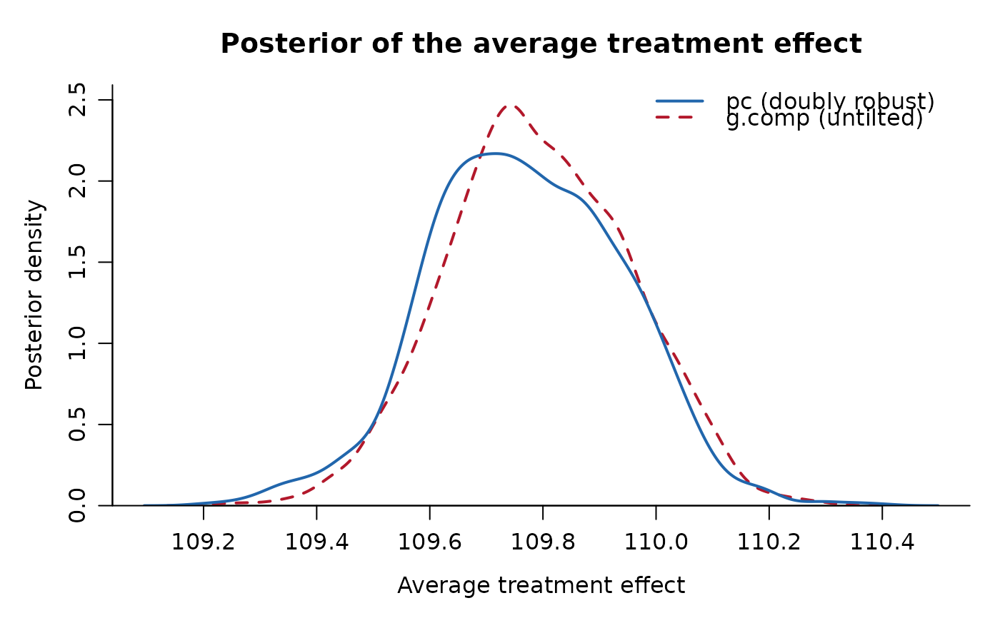

Posterior densities of the two average treatment effect estimands, or rank plots of the underlying MCMC draws.
Arguments
- x
An object of class
"DRBayes"fromdrbayes_pc().- type
"density"(default) for the overlaid posterior densities, or"rank"for rank plots of the MCMC draws.- model
For
type = "rank", which model to plot,"outcome"(default) or"ps".- parameter
For
type = "rank", the coefficient to plot, given as a name or as an index. Defaults to the first.- col
Two colours, for
pcand forg.compin that order. Used bytype = "density"only.- lwd
Line width for the density curves.
- main
Plot title. Defaults to a description of the estimand.
- xlab
Label of the horizontal axis.
- legend
Set to FALSE to leave the legend off the density plot.
- ...
Further graphical parameters passed to the underlying plot.
Value
Invisibly, x for type = "density", or the list returned by
rank_plot() for type = "rank".
Details
With type = "density" the posterior of pc is drawn over the posterior of
g.comp on a common axis. The gap between the two curves is the tilt: it is
how far the doubly robust moment condition has had to move the g-formula
posterior, and its size is summarised by the tilting parameter lambda
reported by print.DRBayes(). A gap much wider than the posterior spread
means the outcome model and the propensity score model disagree strongly, and
both should be inspected before either estimate is reported. Curves that lie
on top of one another mean the outcome model already satisfied the moment
condition, and lambda will be at or near zero.
With type = "rank" the rank histograms of rank_plot() are drawn for one
coefficient of one of the two models. These need the per-chain draws of the
model coefficients, which a fit only carries when drbayes_pc() was asked to
keep them.
Base graphics are used throughout, and the graphics parameters are restored on exit.
Examples
# generate_dataset() leaves the caller's random number stream alone, so
# seed the coupling itself to make the fit below reproducible.
set.seed(1)
data <- generate_dataset(nn = 200, pp = 0, seed = 1)
fit <- drbayes_pc(YY ~ AA + WW1 + WW2 + WW3 + WW4,
AA ~ WW1 + WW2 + WW3 + WW4,
data = data,
outcome.model = bayes_lm, ps.model = bayes_logit,
mc = 2000, bn = 500, verbose = FALSE,
control = drbayes_control(n_steps = 200))
plot(fit)
